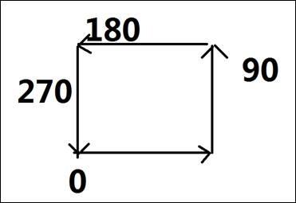
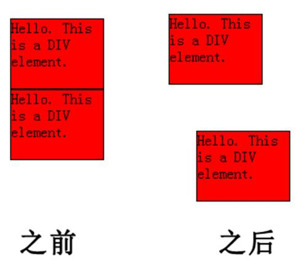
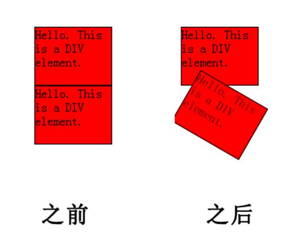
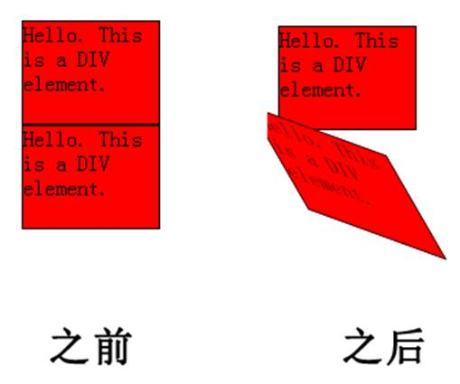

第十三天
Css3第二天
border-radius:***/***; /前设置表示在水平方向上半径, /后设置表示在垂直方向上半径；
1.取值数目：
一个值---à 1234
两个值---à 13、24
三个值---à 1、24、3
四个值---à 1 、2 、3、 4
[边框顺时针各个角依次为1234]
2.单个圆角的设置： border-top-left-radius
功能：将图片规定为包围 div 元素的边框。
border-image 属性是一个简写属性，用于设置以下属性:
|
值 |
描述 |
|
border-image-source |
用在边框的图片的路径。 |
|
border-image-slice |
图片边框向内偏移。 |
|
border-image-width |
图片边框的宽度。 |
|
border-image-outset |
边框图像区域超出边框的量。（不可为负值） |
|
border-image-repeat |
图像边框是否应平铺(repeated)、铺满(rounded)或拉伸(stretched)。 |

指沿着某条直线朝一个方向产生渐变效果。
linear-gradient( [<point> || <angle>,]? <stop>, <stop> [, <stop>]* )
1. 第一个参数表示线性渐变的方向。
・to left：设置渐变为从右到左，相当于: 270deg;
・to right：设置渐变从左到右，相当于: 90deg;
・to top：设置渐变从下到上，相当于: 0deg;
・to bottom：设置渐变从上到下，相当于: 180deg。（默认值）
・也可以直接指定度数，如45deg
2. 第二个参数是起点颜色。
3. 第三个参数是终点颜色，你还可以在后面添加更多的参数，表示多种颜色的渐变。
从一个中心点开始沿着四周产生渐变效果
radial-gradient([ [ at <position> ]? [ <shape> || <size> ] , ?<color-stop>[ , <color-stop> ]+)
1.shape：渐变的形状，ellipse椭圆形(默认)，circle表示圆形。
2.size：渐变的大小，即渐变到哪里停止，它有四个值。
closest-side：最近边； farthest-side：最远边；
closest-corner：最近角； farthest-corner：最远角（默认值）
3.<position> 确定圆心的位置。
如果提供2个参数，第一个表示横坐标，第二个表示纵坐标；
如果只提供1个，第二值默认为50%，即center
4.<color>：指定颜色。
background: repeating-linear-gradient(33deg,red 0%,red10%,
blue 10%,blue 20%);
4.过渡transition
transition-property规定应用过渡的 CSS 属性的名称。
transition-duration定义过渡效果花费的时间。默认是 0。
transition-timing-function规定过渡效果的时间曲线。默认是 "ease"。
ease规定慢速开始，然后变快，然后慢速结束的过渡效果
linear规定以相同速度开始至结束的过渡效果
ease-in规定以慢速开始的过渡效果
ease-out规定以慢速结束的过渡效果
ease-in-out规定以慢速开始和结束的过渡效果
transition-delay规定过渡效果何时开始。默认是 0。
transition ：[ transition-property ] || [ transition-duration ] || [
transition-timing-function ] || [ transition-delay ]简写属性，用于在一个属性中设置四个过渡属性。
注释：CSS3 过渡是元素从一种样式逐渐改变为另一种的效果。要实现这一点，必须规定两项内容：
1.规定把效果添加到哪个 CSS 属性上
2.规定效果的时长
Internet Explorer 10、Firefox、Chrome 以及 Opera 支持
transition 属性。
Safari
需要前缀 -webkit-。
Internet
Explorer 9 以及更早的版本，不支持 transition 属性。 Chrome 25 以及更早的版本，需要前缀 -webkit-。
当鼠标光标移动到该元素时，它逐渐改变它原有样式
宽度的过渡案例：（当鼠标划上时宽度由小逐渐变大）
一、2D转换transform
1、 translate( ,)偏移方法
translate()根据左(X轴)和顶部(Y轴)位置给定的参数，从当前元素位置移动。
Internet Explorer 10, Firefox, 和 Opera支持transform
属性.
Chrome 和 Safari 要求前缀
-webkit- 版本.
注意： Internet Explorer 9 要求前缀 -ms- 版本.

div {
width:100px;
height:75px;
background-color:red;
border:1px solid
black;
}
#div2{
transform:translate(30px,50px);
-ms-transform:translate(30px,50px); IE 9
-webkit-transform:translate(30px,50px); */
}
<div>Hello. This is
a DIV element.</div>
<div id="div2">Hello.
This is a DIV element.</div>
2、 rotate()旋转方法
rotate()方法，在一个给定度数顺时针旋转的元素。负值是允许的，这样是元素逆时针旋转。

div {
width:100px;
height:75px;
background-color:red;
border:1px solid
black;
}
#div2{
transform:rotate(30deg);
-ms-transform:rotate(30deg); -webkit-transform:rotate(30deg);
}
<div>Hello. This is
a DIV element.</div>
<div id="div2">Hello.
This is a DIV element.</div>
3、 scale( ,)缩放方法
scale()方法，该元素增加或减少的大小，取决于宽度（X轴）和高度（Y轴）的参数：
div 元素的宽度是原始大小的两倍，高度是原始大小的三倍。
div {
margin: 150px;
width: 200px;
height: 100px;
background-color:
yellow;
border: 1px solid
black;
border: 1px solid
black;
-ms-transform: scale(2,3); /*
IE 9 */
-webkit-transform: scale(2,3); /* Safari */
transform: scale(2,3); /* 标准语法 */
}
4、 skew( ,)扭曲方法
skew()方法，该元素会根据横向（X轴）和垂直（Y轴）线参数给定角度：

div{
width:100px;
height:75px;
background-color:red;
border:1px solid
black;
}
#div2{
transform:skew(30deg,20deg);
-ms-transform:skew(30deg,20deg);
-webkit-transform:skew(30deg,20deg);
}
<div>Hello. This is
a DIV element.</div>
<div id="div2">Hello.
This is a DIV element.</div>
5、 360度旋转案例
img{
width: 320px;
height: 350px;
display: block;
margin: 40px auto;
border-radius: 50%;
border: #2e51ff solid 2px;
transition: all 5s;
/*all来表示所有的属性都变化*/
}
img:hover{
transform:
rotate(360deg);
}
<img src="img/img1.jpg">
6、 translateX(x) 定义转换，只是用 X 轴的值。
7、 translateY(y) 定义转换，只是用 Y 轴的值。
8、 transform-origin设置旋转元素的基点位置：
transform-origin: 0% 0%;
9、 transition-delay延迟